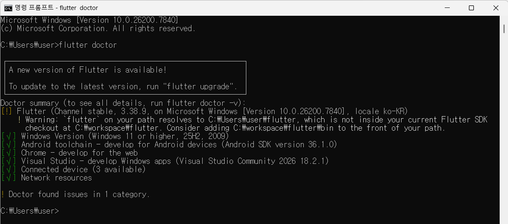
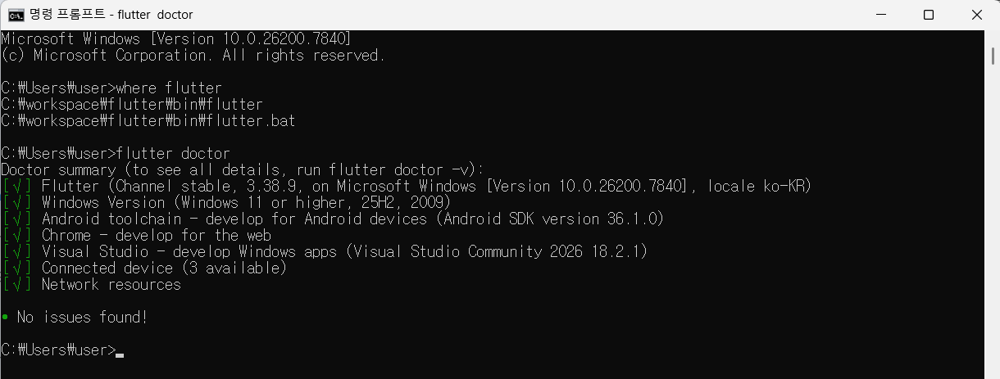
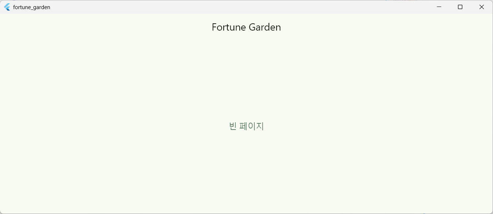

기본 환경 설정 (Windows 기준)
① Flutter SDK 설치
# 1. Flutter 공식 사이트에서 SDK 다운로드 # https://docs.flutter.dev/get-started/install/windows # 2. 압축 해제 후 환경변수 등록 (예: C:\flutter\bin) # 시스템 환경변수 > Path에 추가 # 3. 설치 확인 flutter doctor
Flutter doctor 결과에서 아래 항목이 모두 ✅ 인지 확인하세요.
- Flutter SDK
- Android toolchain (모바일 빌드용)
- Visual Studio (Windows Desktop 빌드용)
- VS Code 또는 Android Studio

※ 환경 변수 순서 바꾸기
컴퓨터는 Path에 등록된 순서대로 명령어를 찾습니다. C:\workspace\flutter\bin을 가장 위로 올려주면 해결됩니다.
C:\workspace\flutter\bin이 있는지
확인합니다. 있다면 [위로 이동] 버튼으로 맨
위로 올리고, 없다면 [새로 만들기]로 추가 후
맨 위로 올립니다.

② Visual Studio 설치 (Windows Desktop 빌드 필수)
Flutter Desktop 앱(Windows 10/11)을 빌드하려면 Visual Studio 2022가 필요합니다.
- https://visualstudio.microsoft.com에서 Community 버전 설치
- 설치 시 "C++를 사용한 데스크톱 개발" 워크로드 반드시 선택
③ Android Studio / SDK 설치 (Android 빌드용)
# Android Studio 설치 후 flutter doctor --android-licenses # 라이선스 동의
④ VS Code 확장 설치
Flutter 앱 개발 전반 지원. 디버깅, 핫 리로드, 위젯 인스펙터 등
Dart 언어 지원. 자동완성, 타입 분석, 포매팅
Riverpod 코드 스니펫 자동완성
pubspec.yaml 패키지 검색 및 추가를 VS Code 내에서 처리
Flutter 프로젝트 생성 및 가상환경(패키지) 설정
Flutter는 Python의 venv 같은 별도 가상환경 대신 pubspec.yaml로 의존성을 관리합니다.
① 프로젝트 생성
# Windows + Android 멀티플랫폼 프로젝트 생성 flutter create --org com.yourname --platforms=windows,android fortune_garden cd fortune_garden # Windows Desktop 활성화 flutter config --enable-windows-desktop
② pubspec.yaml 의존성 설정
pubspec.yaml을 열고 아키텍처 문서에 명시된 패키지들을 추가합니다.
name: fortune_garden description: 2인 가구용 자동 동기화 가계부 environment: sdk: ">=3.0.0 <4.0.0" dependencies: flutter: sdk: flutter # 상태관리 (Riverpod) flutter_riverpod: ^2.5.1 riverpod_annotation: ^2.3.5 # 로컬 DB (drift ORM + SQLite) drift: ^2.18.0 sqlite3_flutter_libs: ^0.5.0 path_provider: ^2.1.3 path: ^1.9.0 # Shelf 로컬 서버 (CODEF 프록시) shelf: ^1.4.1 shelf_router: ^1.1.4 http: ^1.2.1 # 보안 (OS Keychain) flutter_secure_storage: ^9.0.0 # 암호화 (AES-256) encrypt: ^5.0.3 # 네트워크 상태 connectivity_plus: ^6.0.3 # 유틸 intl: ^0.19.0 freezed_annotation: ^2.4.1 dev_dependencies: flutter_test: sdk: flutter build_runner: ^2.4.9 drift_dev: ^2.18.0 riverpod_generator: ^2.4.0 freezed: ^2.5.2 json_serializable: ^6.7.1 flutter_lints: ^3.0.0
③ Clean Architecture 폴더 구조 생성
# lib 하위 구조 생성 (PowerShell) $dirs = @( "lib/presentation/screens/dashboard", "lib/presentation/screens/transaction", "lib/presentation/screens/report", "lib/presentation/screens/settings", "lib/presentation/widgets", "lib/presentation/providers", "lib/application/usecases", "lib/application/services", "lib/infrastructure/shelf_server", "lib/infrastructure/codef", "lib/data/repositories", "lib/data/datasources", "lib/data/database", "lib/domain/entities", "lib/domain/repositories" ) $dirs | ForEach-Object { New-Item -ItemType Directory -Force -Path $_ }
GitHub 설정
① Git 초기화 및 .gitignore 설정
cd fortune_garden git init
.gitignore 파일을 열고 Flutter 기본 항목에 보안 관련 항목을 추가합니다.
# Flutter/Dart .dart_tool/ .flutter-plugins .flutter-plugins-dependencies .packages build/ *.g.dart # 생성 코드 (빌드 시 자동 생성) *.freezed.dart # 환경 변수 / 시크릿 (절대 커밋 금지) .env .env.* lib/infrastructure/shelf_server/secret_config.dart android/key.properties android/app/*.jks # IDE .vscode/settings.json .idea/ *.iml # OS .DS_Store Thumbs.db # 빌드 아웃풋 windows/flutter/ephemeral/
② GitHub 원격 저장소 연결
# GitHub에서 새 저장소(fortune_garden) 생성 후 git remote add origin https://github.com/<your-username>/fortune_garden.git # 초기 커밋 git add . git commit -m "chore: initial Flutter project setup with Fortune Garden architecture" git branch -M main git push -u origin main
③ 브랜치 전략 설정 (권장)
아키텍처 문서 기반 2인 개발 환경에 적합한 브랜치 구조입니다.
※ 로컬에서 develop 브랜치 생성 및 푸시
터미널이나 Git Bash를 열고 프로젝트 루트 폴더에서 다음 명령어를 순서대로 입력하세요.
# 1. 현재 브랜치가 main인지 확인 git checkout main # 2. 최신 상태 업데이트 git pull origin main # 3. main을 바탕으로 develop 브랜치 생성 및 이동 git checkout -b develop # 4. 생성한 develop 브랜치를 원격 저장소(GitHub 등)에 올리기 git push -u origin develop
다음 단계: Feature 브랜치 시작하기
이제 develop 브랜치가 준비되었습니다. 대시보드 화면 작업을 시작하려면 develop 상태에서 아래와 같이 진행하세요.
# 항상 develop에서 시작 git checkout develop git pull origin develop # 새로운 기능 브랜치 생성 git checkout -b feature/dashboard-screen
빌드 확인
# Windows Desktop 실행 테스트 flutter run -d windows # Android 에뮬레이터 실행 flutter run -d android # 코드 생성기 실행 (drift, riverpod, freezed) dart run build_runner build --delete-conflicting-outputs

완료 체크리스트
| 항목 | 확인 |
|---|---|
| flutter doctor 전체 확인 | ☑ |
| Visual Studio (C++ 워크로드) 설치 | ☑ |
| flutter pub get 성공 | ☑ |
| 폴더 구조 생성 완료 | ☑ |
| .gitignore 에 시크릿 파일 제외 | ☑ |
| GitHub 원격 연결 & 초기 커밋 | ☑ |
| flutter run -d windows 정상 실행 | ☑ |